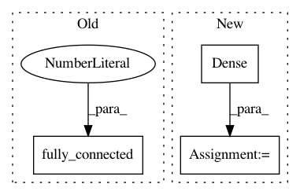

5f01692afeac101a3d5ff8364474a8e360f7cca1,tf_agents/utils/common_test.py,SoftVariablesUpdateTest,testShuffleOrderVariables,#SoftVariablesUpdateTest#Any#,94
Before Change
def testShuffleOrderVariables(self, tau):
inputs = tf.constant([[1, 2], [3, 4]], dtype=tf.float32)
tf.contrib.layers.fully_connected(inputs, 2, scope="source")
tf.contrib.layers.fully_connected(inputs, 2, scope="target")
source_vars = tf.contrib.framework.get_model_variables("source")
target_vars = tf.contrib.framework.get_model_variables("target")
After Change
def testShuffleOrderVariables(self, tau):
inputs = tf.constant([[1, 2], [3, 4]], dtype=tf.float32)
source_net = tf.keras.layers.Dense(2, name="source_net")
target_net = tf.keras.layers.Dense(2, name="target_net")
// Force variable creation
source_net(inputs)
target_net(inputs)
source_vars = source_net.trainable_weights
target_vars = target_net.trainable_weights
shuffled_source_vars = sorted(source_vars,
key=lambda x: random.random())
shuffled_target_vars = sorted(target_vars,
In pattern: SUPERPATTERN
Frequency: 3
Non-data size: 3
Instances
Project Name: tensorflow/agents
Commit Name: 5f01692afeac101a3d5ff8364474a8e360f7cca1
Time: 2019-02-25
Author: oars@google.com
File Name: tf_agents/utils/common_test.py
Class Name: SoftVariablesUpdateTest
Method Name: testShuffleOrderVariables
Project Name: tensorflow/agents
Commit Name: 5f01692afeac101a3d5ff8364474a8e360f7cca1
Time: 2019-02-25
Author: oars@google.com
File Name: tf_agents/utils/common_test.py
Class Name: SoftVariablesUpdateTest
Method Name: testUpdateOnlyTargetVariables
Project Name: altosaar/variational-autoencoder
Commit Name: b43325e297498269be86b281a02e2ef79664f273
Time: 2019-09-18
Author: altosaar@users.noreply.github.com
File Name: train_variational_autoencoder_tensorflow.py
Class Name:
Method Name: generative_network